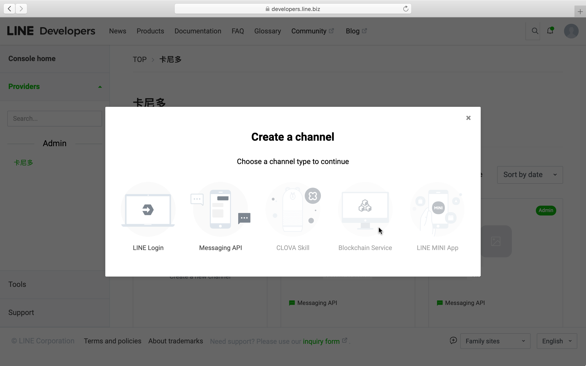
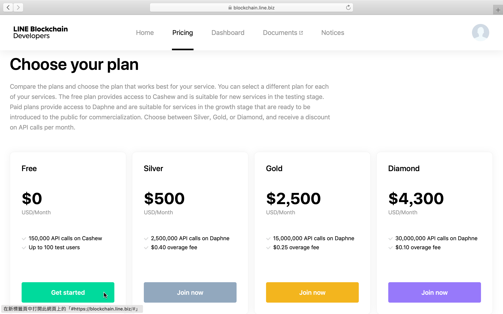
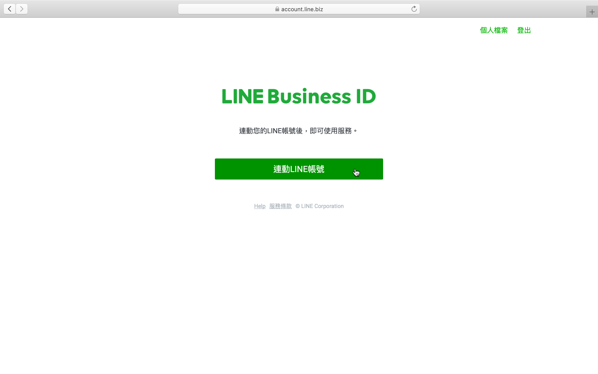
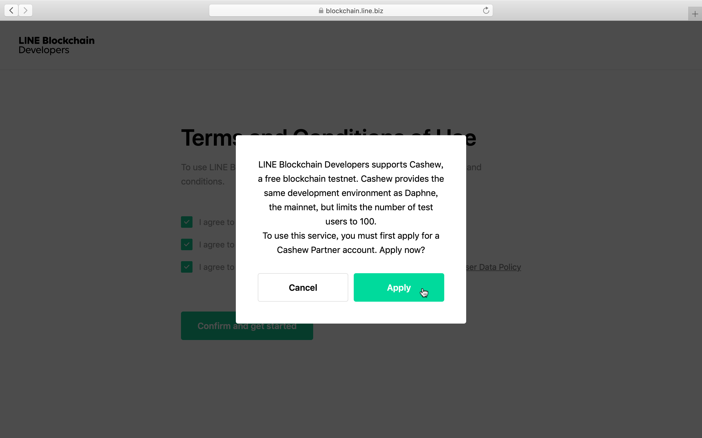
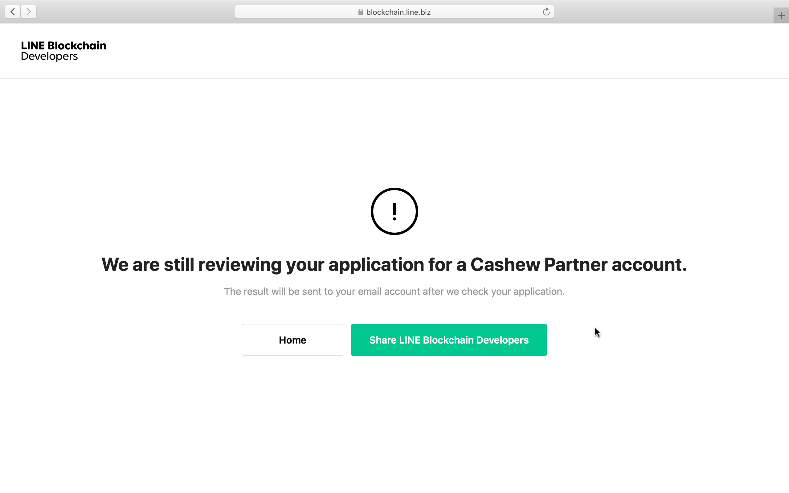

可能是因為比較新的關係，在網路上頗難找到用 Python 弄 LINE Blockchain 的教學文。
這篇的誕生，一樣也是因為升大四暑假的那一場線上黑客松。
前置作業 啟用服務 還沒啟用 LINE Blockchain 前，創 channel 的時候 Blockchain Service 的地方會暗掉不讓你按。

到 LINE Blockchain Developers 的 Pricing 頁面選一個方案開始吧！

光是用商用帳號不夠哦，還得連動我們自己的 LINE 帳號。

連動完就 OK 了嗎？還沒哦！我們還要申請一個 Cashew Partner 帳戶才行，就 Apply 吧！

不是按完 Apply 就能啟用，還得再等他們 reviewing。

申請通過以後，創建 channel 時就能選 Blockchain Service 囉！
LINE Blockchain YouTube 頻道 LINE Developers 有個教學影片 An Introduction to LINE Blockchain Platform 介紹得很好，它有 step-by-step 的操作步驟！
那如果你想學怎麼用 JavaScript 弄 LINE Blockchain，或許可以參考影片裡面的 repo line-blockchain-coffee 。
又或者你想更有系統地學習 LINE Blockchain？官方教學文檔 是個不錯的地方！（只不過它是用 curl）
Python code Generating signature 因為 call LINE Blockchain 的 API 需要 signature，所以先來寫(抄) signature 的部分吧！官方文檔 上有範例 code，我想，我們就直接拿來用吧！
request_flattener.py這是 Signature Generator 會需要用到的 utility。
我沒有特別去研究它每一行 code 分別代表什麼意思，想說這對黑客松來說根本不重要，重要的是能知道怎麼用，然後拿來開發出我們需要的 feature。
1 2 3 4 5 6 7 8 9 10 11 12 13 14 15 16 17 18 19 20 21 22 23 24 class RequestBodyFlattener : def __flatten_key_value (self, key, value ): if (isinstance (value, str )): return f"{key} ={value} " if (isinstance (value, list )): l_key_value = {} for index, ele in enumerate (value): for lkey in list (ele.keys() | l_key_value.keys()): if lkey in ele.keys(): lvalue = ele[lkey] else : lvalue = "" if (lkey in l_key_value.keys()): l_key_value[lkey] = f"{l_key_value[lkey]} ,{lvalue} " else : l_key_value[lkey] = f"{',' * index} {lvalue} " return "&" .join("%s=%s" % (f"{key} .{lkey} " , lvalue) for (lkey, lvalue) in sorted (l_key_value.items())) def flatten (self, body: dict = {} ): sorted_body = sorted (body.items()) return "&" .join(self.__flatten_key_value(key, value) for (key, value) in sorted_body)
signature_generator.py這邊跟官方文檔上有些地方不一樣，像是第 18 行，我改了 generate 的參數順序。
這麼做是因為，它 API reference 那邊 get_signature 的順序跟它在 Generating signature 定義的不一樣，想說未來可能會大量複製貼上它 API 的範例 code，為了未來使用上的方便，乾脆一開始定義的時候照 API reference 的順序不就好了？
1 2 3 4 5 6 7 8 9 10 11 12 13 14 15 16 17 18 19 20 21 22 23 24 25 26 27 28 29 30 31 32 33 34 35 36 37 38 39 import hmacimport hashlibimport base64import loggingimport sysfrom .request_flattener import RequestBodyFlattenerclass SignatureGenerator : def __createSignTarget (self, method, path, timestamp, nonce, parameters: dict = {} ): signTarget = f'{nonce} {str (timestamp)} {method} {path} ' if (len (parameters) > 0 ): signTarget = signTarget + "?" return signTarget def generate (self, method: str , path: str , nonce: str , timestamp: int , service_api_secret: str , query_params: dict = {}, body: dict = {} ): body_flattener = RequestBodyFlattener() all_parameters = {} all_parameters.update(query_params) all_parameters.update(body) signTarget = self.__createSignTarget(method.upper(), path, timestamp, nonce, all_parameters) if (len (query_params) > 0 ): signTarget += '&' .join('%s=%s' % (key, value) for (key, value) in query_params.items()) if (len (body) > 0 ): if (len (query_params) > 0 ): signTarget += "&" + body_flattener.flatten(body) else : signTarget += body_flattener.flatten(body) raw_hmac = hmac.new(bytes (service_api_secret, 'utf-8' ), bytes (signTarget, 'utf-8' ), hashlib.sha512) result = base64.b64encode(raw_hmac.digest()).decode('utf-8' ) return result
包成自己 project 需要的 function 以下面兩個為例：
Details 的地方展開以後，往下滑就能找到 Python 的範例 code！
users.py
底層 1 2 3 4 5 6 7 8 9 10 11 12 13 import osimport requestsimport randomimport stringimport timefrom .utils.signature_generator import SignatureGeneratorsignatureGenerator = SignatureGenerator() get_signature = signatureGenerator.generate
1 2 3 4 5 6 7 8 9 10 11 12 13 14 15 16 17 18 19 20 21 22 23 24 25 26 27 28 29 30 31 32 33 34 class retrieve : @staticmethod def wallet_address (user_id ): server_url = os.environ['SERVER_URL' ] service_api_key = os.environ['SERVICE_API_KEY' ] service_api_secret = os.environ['SERVICE_API_SECRET' ] nonce = '' .join(random.choice(string.ascii_uppercase + string.ascii_lowercase + string.digits) for _ in range (8 )) timestamp = int (round (time.time() * 1000 )) path = f'/v1/users/{user_id} ' headers = { 'service-api-key' : service_api_key, 'nonce' : nonce, 'timestamp' : str (timestamp) } signature = get_signature('GET' , path, nonce, timestamp, service_api_secret) headers['signature' ] = signature res = requests.get(server_url + path, headers=headers) wallet_address = res.json()['responseData' ]['walletAddress' ] return wallet_address
Transfer a delegated service token 1 2 3 4 5 6 7 8 9 10 11 12 13 14 15 16 17 18 19 20 21 22 23 24 25 26 27 28 29 30 31 32 33 34 35 36 37 38 39 40 class transfer : @staticmethod def service_token (user_id, amount ): server_url = os.environ['SERVER_URL' ] service_api_key = os.environ['SERVICE_API_KEY' ] service_api_secret = os.environ['SERVICE_API_SECRET' ] contract_id = os.environ['LBP_CONTRACT_ID_LBCC' ] owner_address = os.environ['LBP_OWNER_WALLET_ADDRESS' ] owner_secret = os.environ['LBP_OWNER_WALLET_SECRET' ] nonce = '' .join(random.choice(string.ascii_uppercase + string.ascii_lowercase + string.digits) for _ in range (8 )) timestamp = int (round (time.time() * 1000 )) path = f'/v1/users/{user_id} /service-tokens/{contract_id} /transfer' request_body = { 'ownerAddress' : f'{owner_address} ' , 'ownerSecret' : f'{owner_secret} ' , 'amount' : f'{amount * 1000000 } ' } headers = { 'service-api-key' : service_api_key, 'nonce' : nonce, 'timestamp' : str (timestamp), 'Content-Type' : 'application/json' } signature = get_signature('POST' , path, nonce, timestamp, service_api_secret, body=request_body) headers['signature' ] = signature res = requests.post(server_url + path, headers=headers, json=request_body) return res.json()
你會發現，很多範例 code 寫死的部分，我都用 f-strings 代替，原因你應該知道xD
使用那些 function 先給大家看我 project 跟 blockchain 有關的目錄結構：
1 2 3 4 5 6 7 8 9 src ├── fsm.py └── service └── blockchain ├── service_tokens.py ├── users.py └── utils ├── request_flattener.py └── signature_generator.py
下面是 fsm.py 的某個部份：
1 2 3 4 5 6 7 8 from service.blockchain import users, service_tokensuser_id = 'this_is_user_id' amount = 30 users.transfer.service_token(user_id, amount) user_wallet_address = users.retrieve.wallet_address(user_id) service_tokens.mint(user_wallet_address, amount)
知道為什麼我要包成 class 了吧？這樣就能夠照文檔編排的邏輯 call function！
希望讀完這篇文章的您能夠有所收穫，我們下篇文見啦 😃